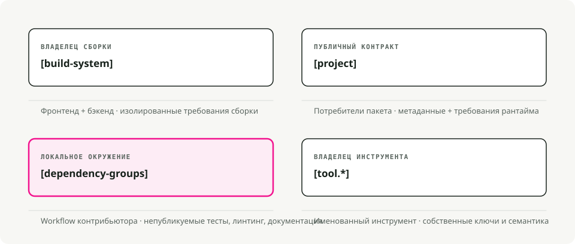
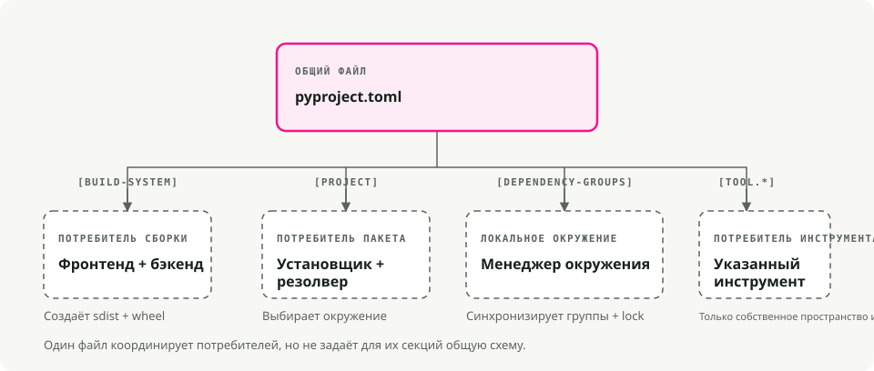
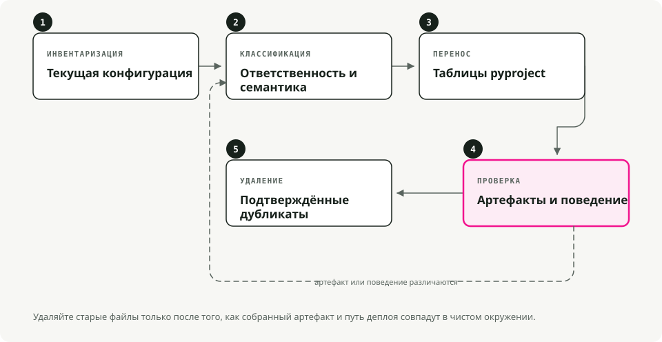

Автоматический перевод
Эта статья была автоматически переведена с оригинальной английской версии.
pyproject.toml Руководство: пакетизация Python, зависимости и настройка инструментов
Если вы когда-либо открывали проект на Python и пытались выяснить, где именно находятся зависимости, параметры сборки и конфигурации инструментов, вы знаете, с какими трудностями это связано. setup.py, setup.cfg, requirements.txt, MANIFEST.in, плюс несколько файлов с расширением .dot для каждого инструмента проверки кода и форматирования — все они читают данные из разных источников.
pyproject.toml сведёт большую часть из этого к одному файлу.
Кратко
pyproject.toml примерно равно package.json для Python. Один файл содержит метаданные проекта, зависимости и настройки инструментов. Независимо от того, используете ли вы .venv, pyenv, или uvРазмещение всего необходимого здесь упрощает процесс настройки и совместной работы.
Что такое pyproject.toml? PEP 518 (2016) представил [build-system] таблица, позволяющая инструментам сборки задавать свои требования стандартизированным способом. PEP 621 (2020) добавил(а) [project] Таблица с метаданными основных пакетов: имя, версия, зависимости и прочее подобное.
В настоящее время большинство инструментов для Python (Black, isort, pytest, Ruff, mypy) загружает свою конфигурацию из [tool.*] разделы в этом файле.

Почему это важно
Меньше файлов для обработки
Типичный проект устаревшей архитектуры сталкивался с одновременным обработкой множества задач. setup.py, setup.cfg, requirements.txt, MANIFEST.in, и стая файлов с расширением .dotfile (.flake8, .coveragerc, и подобные). Большинство из них собираются в одном месте.
Сборка, не зависящая от бэкенда
Когда вы запускаете pip install ., pip считывает pyproject.toml и устанавливает все необходимые инструменты сборки для вашего проекта: setuptools, flit, hatchling — выбирайте что хотите. Теперь вы не связаны только с setuptools.
Одно место для настройки инструментов
Линтеры, форматтеры, запускатели тестов и проверщики типов автоматически обращаются сюда. Ваш IDE, CI-пайплайн и коллеги читают данные из одного и того же файла.

Анатомия pyproject.toml
Типичный файл содержит три основные секции:
# 1. Build system - tells pip/build how to package your project
[build-system]
requires = ["hatchling"]
build-backend = "hatchling.build"
# 2. Project metadata and dependencies
[project]
name = "awesome-app"
version = "0.1.0"
description = "Short demo of pyproject.toml"
readme = "README.md"
requires-python = ">=3.12"
dependencies = [
"fastapi>=0.111",
"uvicorn[standard]>=0.30",
]
# Expose CLI commands
[project.scripts]
awesome-cli = "awesome_app.cli:main"
# Optional dependencies (e.g., for development)
[project.optional-dependencies]
dev = ["pytest", "ruff", "mypy"]
# 3. Tool configuration
[tool.ruff]
line-length = 100
target-version = "py312"
[tool.pytest.ini_options]
addopts = "-ra -q"
testpaths = ["tests"]
Разбор по составляющим [build-system]
Обязательно требуется, если вы хотите упаковать или распространить свой проект. Это указывается pip и инструментам сборки (таким как python -m build) Какой бэкенд использовать. [project]
Метаданные вашего пакета. Именно здесь хранятся зависимости вместо requirements.txt.
dependencies: требования к среде выполнения для вашего пакета.optional-dependencies: группы дополнительных зависимостейdev,test,docs).scripts: создаёт исполняемые команды. В приведённом выше примере установка пакета предоставляет вамawesome-cliкоманда, запускающаяmainфункция вawesome_app/cli.py.
[tool.*]
Конфигурация для любого инструмента, поддерживающего её. Каждый инструмент имеет собственное пространство имен: [tool.pytest.ini_options], [tool.mypy], [tool.ruff], и остальное.
Заменяет ли это requirements.txt?
Для современных рабочих процессов — да. Такие инструменты, как Поэзия, PDM, Гнездо, и UV хранить зависимости непосредственно в [project] раздел и генерируют файлы блокировки для обеспечения воспроизводимости.
Вероятно, вы всё ещё хотите requirements.txt if:
- Вы работаете с устаревшей системой развертывания, которая этого требует.
- У вас есть скрипт CI, который ещё не был обновлён.
Большинство современных инструментов позволяют экспортировать один из ваших pyproject.toml при необходимости:
uv export > requirements.txt
Выбор бэкенда сборки
Фреймворк для сборки — это один из наиболее спорных вопросов при выборе инструментов. Вот краткое сравнение:
| Бэкенд | Лучше всего подходит для | Преимущества | Недостатки |
|---|---|---|---|
| Птенец | Современный стандарт | Быстрый, расширяемый, поддерживает плагины | Более новые версии с ограниченной поддержкой устаревших технологий |
| Flit | Простые пакеты | Чрезвычайно просто, без какой-либо настройки | Не подходит для сложных сборок (расширения на C). |
| Setuptools | Устаревшие, сложные | Поддерживает всё (расширения на C и т. д.). | Медленнее, больше настроек |
| Поэзия | Пользователи Poetry | Интегрировано с экосистемой Poetry | Заблокировано в рабочем процессе Poetry |
Для новых проектов, написанных исключительно на Python, Hatchling является разумным стандартным выбором. Именно он используется uv init пишет за вас.
Миграция существующего проекта
Если у вас есть устаревший проект на Python, вот как его модернизировать:

- Добавить
[build-system]. Если вы не уверены, какой бэкенд использовать, начните сrequires = ["setuptools>=61", "wheel"]2. Переместите метаданные в[project]. Переносим имя, версию и зависимости изsetup.pyилиsetup.cfg3. Перевести зависимости разработки. Разместить их в[project.optional-dependencies].dev. - Настройка инструментов. Добавить
[tool.*]Разделы для Black, pytest, mypy и т. д. - Определите, что делать с
requirements.txt. Либо удаляйте его, либо генерируйте его из вашего файла блокировки для устаревших систем, которые в нем нуждаются.
После миграции его обычно можно удалить. setup.py, setup.cfg, а также большинство этих конфигурационных файлов в формате .dot.
Несколько полезных функций
Точки входа CLI
Вместо старой версии console_scripts блокировка setup.py, используйте [project.scripts]:
[project.scripts]
my-tool = "my_package.main:run"
Когда кто-то устанавливает ваш пакет, он может ввести my-tool в их терминале.
Рабочие пространства (монорепозитории)
Инструменты вроде uv и hatch поддержка рабочих пространств, позволяющих управлять несколькими пакетами в одном репозитории:
[tool.uv.workspace]
members = ["packages/*"]
Вы можете разработать несколько взаимозависимых пакетов и установить их все в одну виртуальную среду для тестирования.
Типичные рабочие процессы с uv
Запуск нового проекта
uv init my_app # creates folder with pyproject.toml and .venv
cd my_app
uv add requests fastapi # adds to [project.dependencies] and installs
uv run pytest # runs tests in the venv
Запуск скриптов
Вы можете либо определить скрипты в pyproject.toml (используя запускатель задач вроде poe или hatch) или просто вызовите uv run:
uv run python main.py
Практические советы
- Не фиксируйте точные версии в библиотеках. Используйте диапазоны, такие как
requests>=2.30таким образом ваша библиотека не будет конфликтовать с другими компонентами, установленными в среде пользователя. - Фиксируйте версии в приложениях. Используйте файл блокировки.
uv.lock,poetry.lock) для воспроизводимых сборок. - Группируйте зависимости разработки. Храните зависимости для тестирования, проверки формата кода и документации в отдельных факультативных группах.
dev,test,docs). - Не выводите все опции сразу.
pyproject.toml. Следуйте общепроектным настройкам по умолчанию и позвольте файлам конфигурации, предназначенным для конкретных инструментов, заниматься остальным в случае возникновения сложностей.
Настоящая выгода заключается в pyproject.toml В основном речь идет о устранении незначительных ежедневных проблем. Не нужно больше искать, какой файл отвечает за сборку. Конфигурация линтера находится рядом с зависимостями. Pip и ваш IDE наконец соглашаются относительно того, что установлено. Выберите фреймворк для сборки и поместите туда свои зависимости. [project], и позвольте вашим инструментам читать данные из одного места. Если вы только начинаете, uv init позволяет пройти большую часть пути до решения задачи с помощью одной команды.
Основные выводы
pyproject.tomlэто центральный конфигурационный файл для современных проектов на Python.- PEP 518 определяет требования к системе сборки; PEP 621 — метаданные проекта.
- Храните настройки инструментов в
pyproject.tomlесли инструмент это поддерживает, но не следует принуждать разнородные настройки хранить в одном файле. - Файлы-замки и метаданные сборки решают разные задачи: воспроизводимость установки и идентификация пакета.
Ссылки
- PEP 518 - требования к системе сборки
pyproject.toml. - PEP 621 - метаданные проекта. Руководство для пользователей пакетизации в Python: pyproject.toml - практическая настройка проекта. документация проекта UV -
pyproject.tomlс использованием UV.